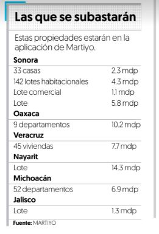

Por Pamela Ventura
La plataforma cuenta con un inventario de 9 propiedades del Banco Inmobiliario Mexicano. Fuente: Shutterstock
Grupo HIR desarrolló la primera plataforma inmobiliaria de subastas en línea en el país llamada Martiyo, la cual comenzará la puja de sus primeras propiedades a partir del próximo 1 de septiembre.
David Grinberg, director de Innovación de Grupo HIR, explicó que el proyecto surgió por necesidad del mercado inmobiliario de vender propiedades y el incremento de esta oferta.
“Pensamos que la solución es la tecnología Fintech, ante eso creamos el primer portal inmobiliario de subastas online en México. Hay subastas tradicionales de forma presencial o por teléfono y remates online, lo que hacemos es juntar estas ideas y hacer subastas 100 por ciento en línea”, explicó.
La plataforma Martiyo de Grupo Hir pretende conectar a quienes poseen algún tipo de bien inmueble y desee venderlo con inversionistas.
Actualmente, la plataforma cuenta con un inventario de 9 propiedades del Banco Inmobiliario Mexicano (BIM), que se subastarán a partir del 1 de septiembre y hasta el 31 de octubre.
Las 9 propiedades a subastarse tienen precios de salida desde un millón 118 mil pesos hasta 14 millones 316 mil pesos, entre estos están haciendas, terrenos, casas y lotes de vivienda social, edificio de departamentos.
Antes del inicio de la puja, el portal promocionará durante dos meses cada inmueble, a fin de generar interés para su compra.
Una vez en curso la subasta no será visible la identidad del pujante ni la cantidad que ofreció, pero las personas que hagan ofertas nuevas se les avisará cuál es el monto mínimo hasta ese momento.
Grinberg dijo que propietarios como compradores deben que acreditar la legalidad de sus intenciones.
Fuente: ‘¿Quién da más?’ Grupo HIR desarrolla la primera plataforma de subastas online